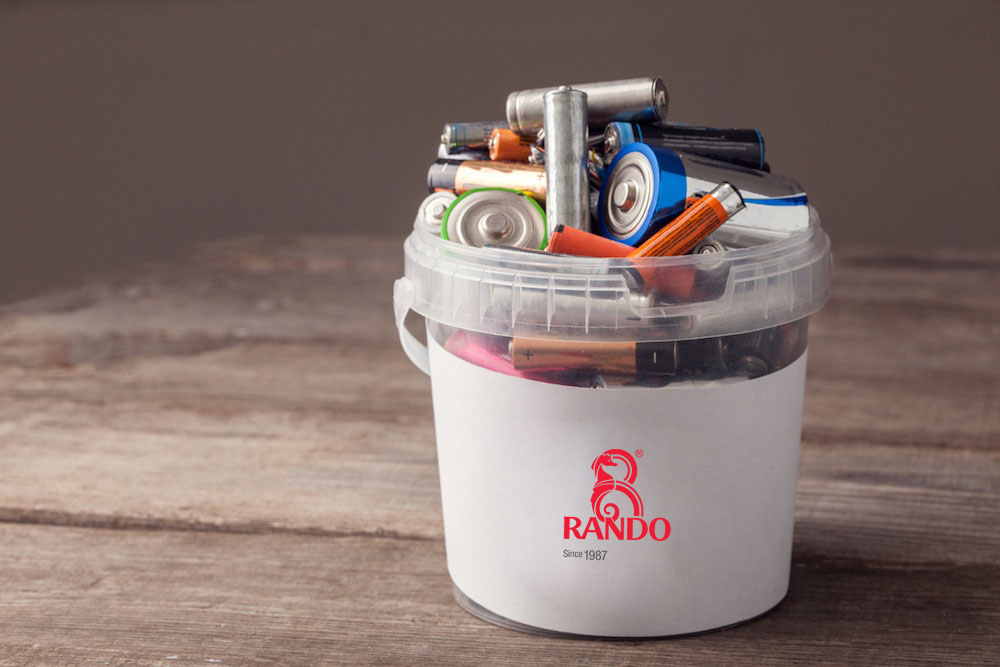
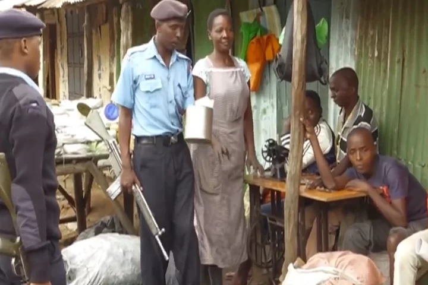
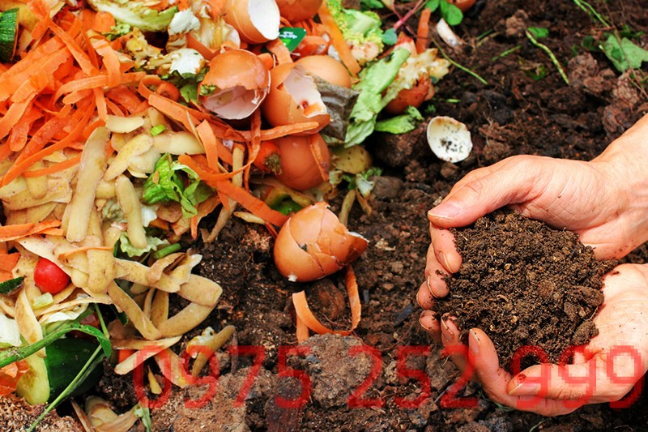
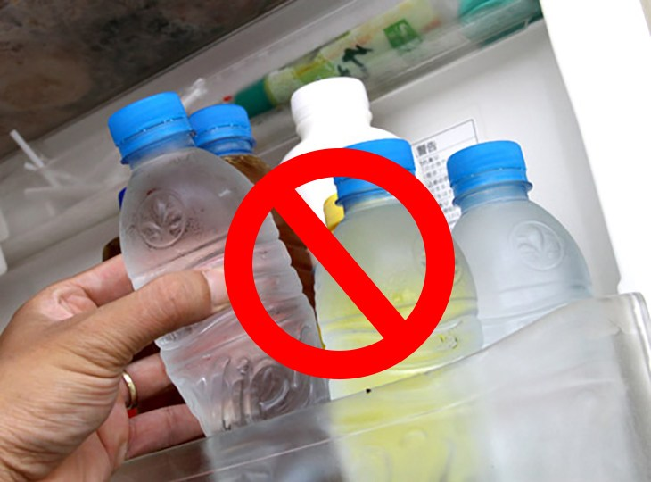
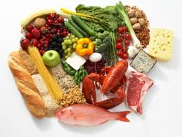
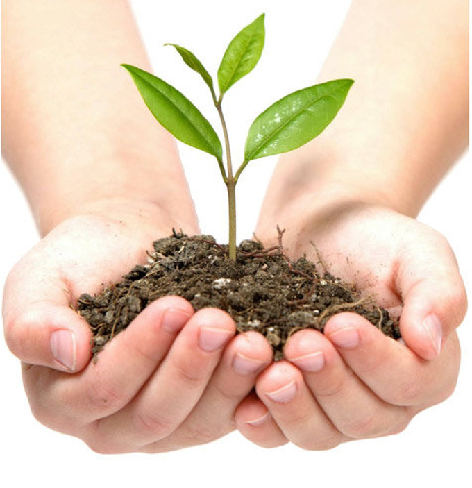
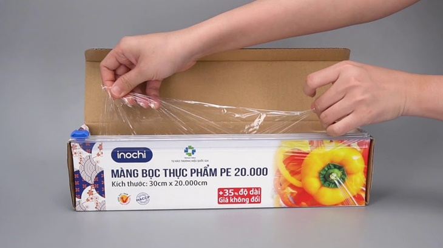
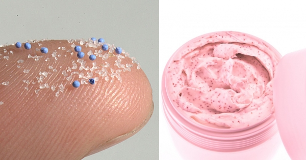

Pin là vật dụng thiết yếu của đời sống hiện đại. Chúng ta sử dụng pin cho hầu hết các vật dụng điện tử trong nhà, nhưng lại không biết rằng pin vô cùng độc hại với môi trường và sức khỏe con người nếu không được xử lý đúng cách. Mọi người thường có thói quen vứt pin đã qua sử dụng vào thùng rác, điều đó thật nguy hiểm. Trong pin có các loại hóa chất cực độc như đồng, chỉ, thủy ngân… Khi pin bị lẫn trong rác thông thường, bị đốt, đập vỡ, chôn xuống đất hoặc đổ ra biển, những chất độc này sẽ rò rỉ, ngấm vào đất, nước hoặc phát tán vào không khí… Lượng thủy ngân trong 1 cục pin có thể làm ô nhiễm 500 lít nước hay 1 mét khối đất trong 50 năm. Và khi con người hấp thụ, các độc tố này sẽ làm tổn thương não, tim mạch, ảnh hưởng đến khả năng sinh sản… Vậy nên, đừng vứt pin bừa bãi mà hãy thu gom lại, sau đó đem đến các điểm thu nhận và xử lý pin các bạn nhé. Chúng ta cũng có thể dễ dàng tra tìm các điểm thu nhận pin trên Google.
 2. Hạn chế dùng túi nilonƯớc tính mỗi năm có khoảng 500 tỷ – 1000 tỷ túi nilon đang được con người sử dụng ở khắp mọi nơi trên trái đất. Túi nilon rất rẻ, và tiện dụng, vì thế mà chúng ta luôn “sẵn tay” lấy túi và cũng sẵn tay vứt túi không chút đắn đo. Túi nilon là những cái bẫy chết chóc đối với sinh vật biển, ảnh hưởng đến đất và cây trồng, phân hủy cực kỳ lâu và không hoàn toàn (chúng sẽ trở thành những mảnh vi nhựa được động vật tiêu thu, và theo chuỗi thức ăn, sẽ quay trở lại cơ thể của chúng ta), thậm chí, khi bị đốt, túi nilon cũng thải ra độc chất tương tự chất độc màu da cam. Chúng ta có thể sử dụng túi vải, túi cói, túi giấy… hay bất kỳ loại túi nào dùng được nhiều lần và có thể phân hủy thay cho túi nilon. Đơn giản chỉ là gấp gọn vài chiếc túi mỏng, nhẹ và cho vào giỏ xách để phòng hờ những khi cần mua đồ gấp. Khi đi chợ, chúng ta nhớ mang theo hộp nhựa để đựng thực phẩm ướt, túi vải lớn để đựng rau, và kiên quyết không nhận túi nilon từ người bán hàng, như vậy là chúng ta đã góp phần bảo vệ môi trường rất nhiều rồi đấy.
 Cảnh sát Kenya mang vũ khí truy lùng người dùng túi ni-lông 3. Tái tạo rác hữu cơ thành phân xanhHẳn ai cũng sẽ có một vườn cây nho nhỏ ở nhà, ngoài ban công, trên sân thượng… Chúng ta có thể tận dụng các loại rác hữu cơ như vỏ củ quả, lá úa, lá sâu để ủ thành phân xanh cho khu vườn của mình. Cách làm rất đơn giản. Mình dùng một cái thùng hoặc chậu cây trống, đổ một lớp đất mỏng, rồi cho rác hữu cơ lên, sau đó phủ lại bằng 1 lớp đất mỏng, cứ lần lượt như thế. Sau một thời gian, tất cả đều trở thành đất và bạn có thể dùng để trồng cây. Hoặc đơn giản hơn, mình rửa sơ các loại vỏ rau củ quả rồi cắt nhỏ, rải lên chậu cây, mỗi lần một ít. Khi lớp mới phủ lên, lớp dưới sẽ phân hủy, như vậy bạn không cần phải thay đất cho chậu cây nữa. Sống ở thành phố, hầu hết mọi người đựng rác trong túi nilon, sau đó sẽ có công nhân vệ sinh đến gom rác, và số rác này sẽ chất đống hoặc được chôn ở đâu đó. Nếu chúng ta tận dụng rác hữu cơ làm phân xanh thì số lần vứt rác cũng như số túi nilon sẽ được giảm thiểu. Không những vậy, mình còn dễ dàng phân loại và thu gom các loại rác vô cơ nữa đấy.
 4. Hạn chế chai nước dùng 1 lầnNgày nay, những chai nước nhựa dùng 1 lần vừa tiện, vừa rẻ với đủ mọi mẫu mã, kiểu dáng xuất hiện khắp nơi. Người ta vì cái sự tiện ấy mà bỏ qua thói quen mang chai nước cá nhân bên mình vì “vướng víu”. Cứ tính thế này, mỗi năm có khoảng 50 tỉ chai nước được tiêu thụ. Và mỗi chai nhựa này có thể mất khoảng 1000 năm để phân hủy hoàn toàn – đặc biệt là những chỗ nhựa đặc như cổ chai, nút chai… Ngay cả ở những nước phát triển có khả năng tái chế một lượng lớn rác nhựa, thì nhiều nơi vẫn chưa có khả năng tái chế nút chai. Hơn nữa, để làm ra những chai nhựa thế này, cần tiêu tốn lượng nước gấp 3 lần lượng nước được bán trong mỗi chai, chưa kể đến khoảng 17 triệu thùng dầu được sử dụng để làm ra chai nhựa đựng nước, và khoảng 50 triệu thùng dầu được sử dụng để chuyên chở và vận chuyển nước đến người tiêu dùng. Một cách ví von đơn giản, mỗi một chai nước bạn mua có 1/4 trong đó là dầu hỏa – lượng nhiên liệu hóa thạch để tạo ra 1 chai nước dùng 1 lần rồi vứt. Cách đơn giản mà ai cũng có thể làm là hãy mua những loại chai sử dụng được nhiều lần, và tập cho mình thói quen tự mang những chai nước này khi hoạt động ngoài trời, khi đi du lịch hay đi chơi
 5. Giảm tiêu thụ thịt và không phí phạm thức ănMột trong những nguyên nhân chính của biến đổi khí hậu là do ngành công nghiệp chăn nuôi. Vậy nên nếu bạn ăn chay, hay giảm bớt lượng thịt, cá và các loại động vật khác thì bạn đã giúp cho trái đất rất nhiều rồi đấy. Nếu tất cả mọi người cùng ăn chay, dù chỉ trong 1 ngày, sẽ có 5 triệu chú heo, 8 triệu chú bò, 33 triệu chú cừu và 480 triệu chú gà thoát khỏi cái chết.Đối với những ai chưa quen, có thể ăn chay 1 ngày trong tuần hoặc đơn giản chỉ là giảm lượng thịt bạn tiêu thụ trong 1 bữa ăn. Ngoài ra, ăn vừa đủ, không phí phạm cũng là một cách thiết thực chúng ta có thể làm để giảm tải áp lực lên ngành công nghiệp thực phẩm. Hóa chất trồng trọt và chất thải chăn nuôi cũng góp phần không nhỏ trong việc làm tăng hiệu ứng nhà kính. Không những vậy, giảm tiêu thụ thực phẩm chính là cách hạn chế nạn phá rừng, chuyển đất lâm nghiệp thành đất nông nghiệp.
 Chế độ ăn uống hợp lí dinh dưỡng giúp con người khỏe mạnh và sống lâu hơn 6.Giữ gìn và trồng mới cây xanhCây xanh hấp thụ khí carbon dioxide, ngăn xói mòn đất và cung cấp ổ sinh thái cho mọi sinh vật sống. Giữ gìn cây xanh bằng cách chọn những vật trang trí nội thất từ các chất liệu thân thiện với sinh thái như tre chẳng hạn. Đừng quá chạy theo mốt, hãy tìm những loại bàn ghế, tủ đựng quần áo bền như vậy vừa tiết kiệm tiền vừa không góp phần tăng lượng đồ phế thải vào môi trường.Ngoài ra việc trồng cây xanh còn có rất nhiều lợi ích khác như: Cung cấp bóng mát,oxi cho con người, điều hòa nhiệt dộ thế giới
 7. Hạn chế sử dụng màng bọc thực phẩmMàng bọc thực phẩm cũng xuất xứ từ nhựa, từ nilon, mà còn hại hơn túi nilon ở chỗ túi nilon bạn có thể giặt sạch và tái sử dụng, nhưng màng bọc thực phẩm thì chỉ có thể dùng 1 lần rồi vứt đi, không thể tái chế hay tái sử dụng. Nhiều nhà bây giờ có thói quen dùng màng bọc thực phẩm bọc thức ăn mặc dù đôi khi không cần thiết. Chúng ta có thể thay đổi bằng cách sử dụng lồng bàn đan từ tre nứa, kim loại hoặc cất thức ăn vào hộp. Ngoài ra, chúng ta cũng hạn chế mua các loại thực phẩm chế biến sẵn trong siêu thị hay cửa hàng tiện lợi, vì hầu hết đều được đựng trong hộp nhựa không thể tái chế và sử dụng màng bọc thực phẩm.
 8. Không dùng mỹ phẩm chứa hạt vi nhựaCác loại mỹ phẩm và sản phẩm chăm sóc vệ sinh cá nhân như sữa rửa mặt, sữa tẩy tế bào da chết, kem đánh răng thường chứa những hạt vi nhựa. Đó là những hạt lấp lánh, li ti, được quảng cáo là giúp massage, tẩy tế bào hay cuốn trôi mảng bám. Nhưng bạn có biết đa phần trong số chúng là những mảnh cực nhỏ của nhựa? Hạt vi nhựa – microbeads – là những hạt nhựa có đường kính nhỏ hơn 1mm. Khi bạn sử dụng những sản phẩm có hạt vi nhựa, chúng được rửa trôi thẳng xuống cống và chảy ra sông hồ, ao biển…ngay cả ở những nước tiên tiến các loại máy lọc nước thải cũng bỏ qua những hạt vi nhựa này vì chúng quá nhỏ. Những hạt vi nhựa trôi nổi trên đại dương có thể hấp thụ và tập trung những chất thải độc hại từ biển. Vì vậy mà chúng được ví như những viên thuốc độc nhỏ xíu trôi nổi trên biển và đầu độc những loài động vật ăn phải chúng. Khi theo chuỗi thức ăn vào cơ thể con người, chúng làm ảnh hưởng đến hệ nội tiết, phổi, hệ miễn dịch và có khả năng gây ra ung thư. Vậy nên, hãy chắc chắn bạn không sử dụng sản phẩm có những hạt vi nhựa này nhé.
